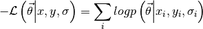

Fitting routines¶
For all methods, the underlying package LMFIT handles the parabolic error calculations and passes along the optimization assignment to SciPy.
Chisquare method¶
When fitting with the chisquare method, the costfunction to be minimized is

with the subscript i referring to the datapoint, and HFS to the
response of the HFSModel class. The algorithm used is the
Levenberg-Marquardt algorithm, which gives quick results in a reliable
fashion. The fitting.chisquare_model function creates the
costfunction used for counting data. The function
fitting.chisquare_fit performs the actual fit, while
fitting.chisquare_spectroscopic_fit calculates the
uncertainty on the data by taking the square root of the number of
counts.
One of the options for fitting.chisquare_model is the keyword
func. This applies the given function to the fitvalue to calculate
the uncertainty on the datapoint. Setting this to the square root
function mimics the use of the Poisson distribution instead of the
Gaussian distribution for the uncertainty calculation.
In order to demonstrate the fit functions, toy data is needed. This is created by assuming some parameters for the basemodel, calculating the response, and then adding random noise.
import satlas as s
import numpy as np
np.random.seed(0) #Ensure the same random numbers each time
I = 1.0
J = [1.0, 2.0]
ABC = [100, 200, 100, 200, 0, 0]
fwhm = [10, 10]
centroid = 500
scale = 100
basemodel = s.HFSModel(I, J, ABC, centroid, fwhm=fwhm, scale=scale, background_params=[10], use_racah=True)
frequency_range = (min(basemodel.locations) - 100, max(basemodel.locations) + 100)
frequency_range = np.linspace(frequency_range[0], frequency_range[1], 200)
data = np.floor(basemodel(frequency_range) + basemodel(frequency_range)**0.5 * np.random.randn(len(frequency_range)))
success, message = s.chisquare_spectroscopic_fit(basemodel, frequency_range, data)
print(success)
print(message)
basemodel.display_chisquare_fit(show_correl=False)
C:UsersMyStuffAnaconda3libsite-packagesIPythonhtml.py:14: ShimWarning: The IPython.html package has been deprecated. You should import from notebook instead. IPython.html.widgets has moved to ipywidgets. "IPython.html.widgets has moved to ipywidgets.", ShimWarning) C:UsersMyStuffAnaconda3libsite-packagesmatplotlib__init__.py:872: UserWarning: axes.color_cycle is deprecated and replaced with axes.prop_cycle; please use the latter. warnings.warn(self.msg_depr % (key, alt_key))
True
Tolerance seems to be too small.
Scaled errors estimated from covariance matrix.
NDoF: 191, Chisquare: 243.70943, Reduced Chisquare: 1.2759656
[[Variables]]
Al: 99.0223550 +/- 1.029561 (1.04%) (init= 99.02318)
Amp0__1: 0.2380726 (fixed)
Amp1__1: 0.1786341 (fixed)
Amp1__2: 0.535743 (fixed)
Amp2__1: 0.01191064 (fixed)
Amp2__2: 0.1786448 (fixed)
Amp2__3: 1 (fixed)
Au: 199.356040 +/- 0.629877 (0.32%) (init= 199.3564)
Background0: 8.73587717 +/- 0.307256 (3.52%) (init= 8.735893)
Bl: 101.393727 +/- 0.692640 (0.68%) (init= 101.3934)
Bu: 200.771492 +/- 1.111849 (0.55%) (init= 200.7717)
Centroid: 499.690041 +/- 0.505937 (0.10%) (init= 499.6901)
Cl: 0 (fixed)
Cu: 0 (fixed)
FWHMG: 12.2505549 +/- 2.776466 (22.66%) (init= 12.25163)
FWHML: 7.54444285 +/- 2.544660 (33.73%) (init= 7.543783)
N: 0 (fixed)
Saturation: 0 (fixed)
Scale: 96.8951274 +/- 6.935488 (7.16%) (init= 96.89334)
TotalFWHM: 16.7770682 +/- 1.394659 (8.31%) == '0.5346*FWHML+(0.2166*FWHML**2+FWHMG**2)**0.5'
If func=np.sqrt is given to the fitfunction, the result is
basemodel = s.HFSModel(I, J, ABC, centroid, fwhm=fwhm, scale=scale, background_params=[50], use_racah=True)
success, message = s.chisquare_spectroscopic_fit(basemodel, frequency_range, data, func=np.sqrt)
print(success)
print(message)
basemodel.display_chisquare_fit(show_correl=False)
True
Tolerance seems to be too small.
Scaled errors estimated from covariance matrix.
NDoF: 191, Chisquare: 204.74572, Reduced Chisquare: 1.0719671
[[Variables]]
Al: 98.4445335 +/- 0.927717 (0.94%) (init= 98.44561)
Amp0__1: 0.2380726 (fixed)
Amp1__1: 0.1786341 (fixed)
Amp1__2: 0.535743 (fixed)
Amp2__1: 0.01191064 (fixed)
Amp2__2: 0.1786448 (fixed)
Amp2__3: 1 (fixed)
Au: 199.023678 +/- 0.568704 (0.29%) (init= 199.0244)
Background0: 10.5068522 +/- 0.311595 (2.97%) (init= 10.50684)
Bl: 101.251169 +/- 0.636961 (0.63%) (init= 101.252)
Bu: 200.907481 +/- 0.963299 (0.48%) (init= 200.9086)
Centroid: 499.893322 +/- 0.473148 (0.09%) (init= 499.8928)
Cl: 0 (fixed)
Cu: 0 (fixed)
FWHMG: 11.4046738 +/- 2.725470 (23.90%) (init= 11.40436)
FWHML: 8.04079635 +/- 2.450016 (30.47%) (init= 8.040946)
N: 0 (fixed)
Saturation: 0 (fixed)
Scale: 97.0921149 +/- 6.671372 (6.87%) (init= 97.09294)
TotalFWHM: 16.3015564 +/- 1.350555 (8.28%) == '0.5346*FWHML+(0.2166*FWHML**2+FWHMG**2)**0.5'
which is slightly different.
Maximum Likelihood Estimation¶
The Maximum Likelihood Estimation (MLE) can be used to derive the chisquare method in the case of Gaussian uncertainties. When this is not the case (as it is for counting data, which has a Poisson distribution), a less simplified method has to be used.
The MLE method works by minimizing the negative loglikelihood. This is calculated as

For the function logp, the standard choice is the loglikelihood derived from the Poisson distribution.
To use this method, the fitting routine code has to be changed to
basemodel = s.HFSModel(I, J, ABC, centroid, fwhm=fwhm, scale=scale, background_params=[10], use_racah=True)
success, message = s.likelihood_fit(basemodel, frequency_range, data)
print(success)
print(message)
basemodel.display_mle_fit(show_correl=False)
True
Optimization terminated successfully.
[[Variables]]
Al: 98.6119935 (init= 98.63549)
Amp0__1: 0.2380726 (fixed)
Amp1__1: 0.1786341 (fixed)
Amp1__2: 0.535743 (fixed)
Amp2__1: 0.01191064 (fixed)
Amp2__2: 0.1786448 (fixed)
Amp2__3: 1 (fixed)
Au: 199.114212 (init= 199.1435)
Background0: 9.94373112 (init= 9.936184)
Bl: 101.382229 (init= 101.4291)
Bu: 200.982154 (init= 201.0038)
Centroid: 499.846731 (init= 499.8283)
Cl: 0 (fixed)
Cu: 0 (fixed)
FWHMG: 10.7541468 (init= 10.70806)
FWHML: 8.61348269 (init= 8.705107)
N: 0 (fixed)
Saturation: 0 (fixed)
Scale: 98.1004112 (init= 98.00073)
TotalFWHM: 16.0817743 == '0.5346*FWHML+(0.2166*FWHML**2+FWHMG**2)**0.5'
The uncertainties on the parameters can be estimated using a random walk through parameter space, or the analytical boundaries can be calculated. The random walk is explained in another tutorial. To estimate the analytical bounds:
s.calculate_analytical_uncertainty(basemodel, frequency_range, data, method='mle')
basemodel.display_mle_fit(show_correl=False)
[[Variables]]
Al: 98.5551182 +/- 0.982856 (1.00%) (init= 98.53085)
Amp0__1: 0.2380726 (fixed)
Amp1__1: 0.1786341 (fixed)
Amp1__2: 0.535743 (fixed)
Amp2__1: 0.01191064 (fixed)
Amp2__2: 0.1786448 (fixed)
Amp2__3: 1 (fixed)
Au: 199.070734 +/- 0.604586 (0.30%) (init= 199.0555)
Background0: 9.95439023 +/- 0.298604 (3.00%) (init= 9.958722)
Bl: 101.352552 +/- 0.725957 (0.72%) (init= 101.3491)
Bu: 200.975161 +/- 0.932456 (0.46%) (init= 200.9768)
Centroid: 499.863041 +/- 0.476942 (0.10%) (init= 499.8666)
Cl: 0 (fixed)
Cu: 0 (fixed)
FWHMG: 10.9019676 +/- 3.395867 (31.15%) (init= 10.97597)
FWHML: 8.45277063 +/- 3.086041 (36.51%) (init= 8.384242)
N: 0 (fixed)
Saturation: 0 (fixed)
Scale: 98.0803022 +/- 7.158631 (7.30%) (init= 98.02322)
TotalFWHM: 16.1547399 == '0.5346*FWHML+(0.2166*FWHML**2+FWHMG**2)**0.5'
By supplying a list of names under the filter keyword, the uncertainty on only certain parameters can be estimated.
Note that, due to the fact that a fit is performed for every calculated value for a parameter, the numbers given as the best fit might change slightly. Convergence is also not guaranteed, so warning messages might be displayed for some parameters.